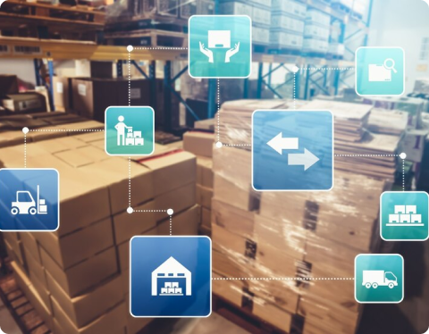
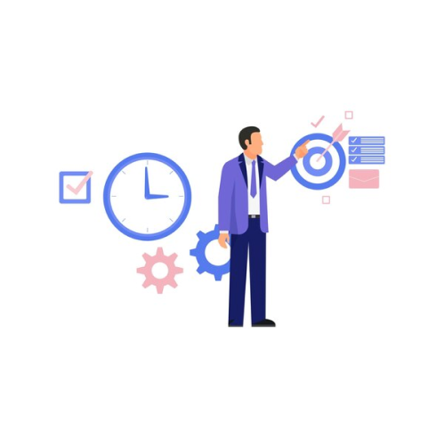
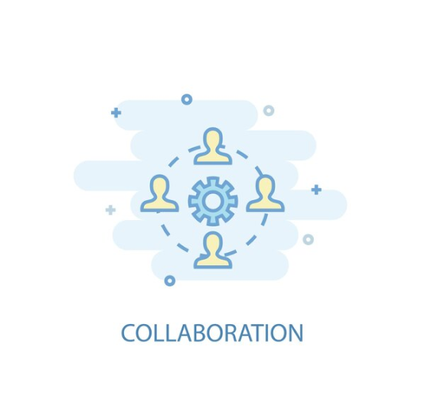

How to Streamline Yard Management with In-Plant Optimization
INTRODUCTION
In the dynamic world of logistics, efficient yard management within a facility is critical for smooth operations. Traditional yard management often grapples with complexities, leading to inefficiencies and bottlenecks. This is where innovation steps in to reshape the landscape. In-plant optimization is the key, and Liveasy Logistics is at the forefront of this transformation, offering solutions that can streamline yard management.
The Essence of In-Plant Optimization
Before we delve into its benefits, let's understand what in-plant optimization is all about. Rooted in cutting-edge technologies and data-driven insights, in-plant optimization focuses on improving various aspects within a facility, including yard management. Specifically, it zeroes in on optimizing the movement of goods within the facility, from unloading at the receiving dock to loading outbound shipments.

Unveiling the Power of Reverse Auctions
Reverse auctions are like taking freight sourcing to an electrifying online platform. Picture it as a bustling digital marketplace where carriers go head-to-head to win your business. Instead of you chasing carriers, they compete for your shipment by bidding down prices. It's a lively online bidding war where the ultimate victor is the lowest bidder, ensuring that you snag the most pocket-friendly shipping rate.
Efficient Resource Allocation
The core strength of in-plant optimization lies in its ability to allocate resources efficiently. By harnessing real-time data and data analytics, logistics managers can make informed decisions about truck positioning, loading priorities, and scheduling maintenance tasks. This means fewer congestion issues, streamlined operations, and reduced wait times for incoming and outgoing trucks.
Real-Time Visibility

One of the remarkable aspects of in-plant optimization is its ability to provide real-time visibility. This elevated perspective empowers logistics teams to monitor the flow of goods and assets as it happens. When potential issues arise, swift action can be taken. For example, if a truck gets stuck in the yard, it can be promptly addressed, minimizing disruptions to the workflow.
Enhanced Collaboration
In-plant optimization fosters collaboration among departments crucial to yard management. Real-time data sharing facilitates seamless communication between warehouse teams, truck drivers, and logistics managers. If a truck is delayed due to unforeseen circumstances, all stakeholders are promptly informed, enabling adjustments without causing disruptions.

Liveasy's Solution
Liveasy Logistics brings these advanced solutions to the table. With a commitment to revolutionizing the industry, Liveasy harnesses technology, data, and collaboration to breathe new life into yard management practices. Through efficient resource allocation, real-time insights, quicker turnaround times, and improved collaboration, Liveasy's in-plant optimization paves the way for heightened efficiency and streamlined operations.
In a world where industries evolve rapidly and customer expectations soar, embracing in-plant optimization for yard management is a strategic imperative. The benefits extend beyond cost savings, encompassing customer satisfaction, resource maximization, and adaptability to market dynamics. If you seek to elevate your yard management to unprecedented heights, explore the transformative potential of Liveasy's in-plant optimization – the future of your supply chain awaits, fortified and efficient.
In a world where industries evolve rapidly and customer expectations soar, embracing in-plant optimization for yard management is a strategic imperative. The benefits extend beyond cost savings, encompassing customer satisfaction, resource maximization, and adaptability to market dynamics. If you seek to elevate your yard management to unprecedented heights, explore the transformative potential of Liveasy's in-plant optimization – the future of your supply chain awaits, fortified and efficient.